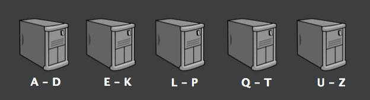

Страх
и
ненависть
в распределенных системах
Гребенников Роман / @public_void_grv
© jpoint 2016
Интро
- серверное приложение
- внутреннее состояние
- перестало помещаться в один сервер?

Куда расти?
- сервер помощнее
- оптимизация
- распределенная система

Агенда
- распределенные системы повсюду
-
как прострелить ногу: теория
- консистентность
- подходы к проектированию
- инструменты
-
как прострелить ногу: практика
- Multimaster key-value DB на 100 строк
- шатание и ломание
- как с этим жить
Пример из жизни
Веб-скрейпер, с общей очередью задач.
- взять из очереди
- проверить, есть ли обьект в очереди
- положить в очередь
Очередь целиком не помещается в RAM.

Пример: шардинг
Разбить всю очередь на блоки
- Каждый сервер работает в рамках своего блока
- взять из очереди = ок
- проверить, есть ли в очереди = тяжеловато
- положить в очередь = тяжеловато
Problems, officer?
Больше компонентов = меньше надежность системы
Что-то обязательно поломается: софт, железо, сеть.
 [1]: P.Gill, Understanding network failures in data centers: measures, analysis and implications
[1]: P.Gill, Understanding network failures in data centers: measures, analysis and implications